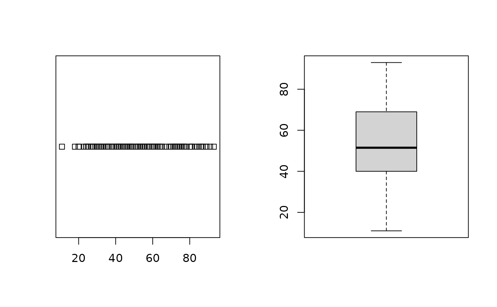

Allows a `numRows` by `numCols` matrix of plots to be displayed in a single plot. If the function is called with no arguments, then the plotting device layout will be reset to a single plot.
Note
This is a legacy convenience wrapper retained for compatibility with
older teaching material. New code can use par(mfrow = ...)
directly.
Deprecated in s20x 3.4.0. Use par(mfrow = ) instead.
Examples
data(course.df)
layout20x(1, 2)
#> Warning: layout20x() is deprecated; use par(mfrow = c(numRows, numCols)) instead.
stripchart(course.df$Exam)
boxplot(course.df$Exam)
